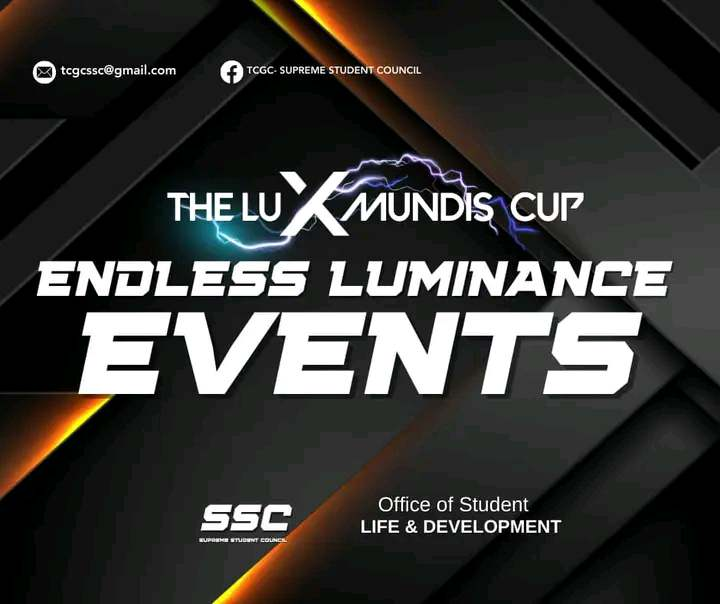

Welcome!
Feel free to look around and enjoy!
Before the intramurals or what we called "Lux Mundi Cup" started. I asked one of my fellow comrades/Friends if what is the essence or what they feel and what is the meaning of this event for them and one of them answered...
The Lux Mundi Cup is an annual intramural sports event that brings together participants from various backgrounds to engage in friendly competition. Named after "Lux Mundi," Latin for "Light of the World," the cup embodies the spirit of illumination and unity through sports. It features a range of athletic activities, fostering teamwork, sportsmanship, and a sense of community among participants. The Lux Mundi Cup goes beyond the competition, creating an inclusive platform where individuals can showcase their skills, build lasting connections, and contribute to a vibrant and spirited atmosphere.
Participating in Lux Mundi Cup intramurals was an exhilarating journey. From the intense matches to the camaraderie with fellow competitors, every moment was a testament to the spirit of sportsmanship. Whether scoring goals or cheering for teammates, the atmosphere was electric, making each game a memorable ex YASSER replied to themself YASSER ROWAON memorable experience. The sense of pride and unity among participants created a lasting bond, turning Lux Mundi Cup into more than just a competition—it became a celebration of teamwork and shared passion for sports.